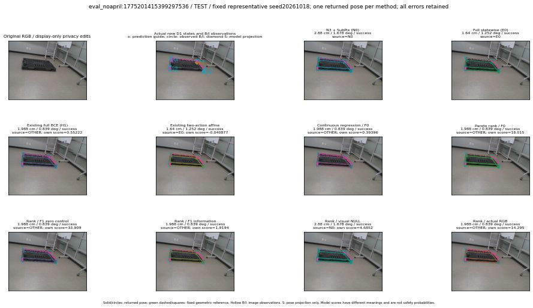

실선은 반환 자세, 초록 점선은 고정 기하 참조입니다. S는 영상 관측이 아닙니다. 점수는 모델별 의미가 다르며 보정된 안전 확률이 아닙니다. 개인정보 처리는 표시 사본에만 적용했습니다.
| 방법·seed | 위치 / 회전 / 공동성공 | 실제 출처 | 선택 후보 | 각 모델 자체 점수 |
|---|---|---|---|---|
| N0 | 2.88 cm / 1.678 deg / success | N0 | N/A | N/A |
| E0 | 1.64 cm / 1.252 deg / success | E0 | N/A | N/A |
| E0_REGENERATED | 1.64 cm / 1.252 deg / success | E0 | E0_REGENERATED | N/A |
| POSEFIX_SUBPIX_PF_ANCHOR | 6.986 cm / 0.6403 deg / failure | OTHER | N/A | N/A |
| POSEFIX_SUBPIX_YOLO_ANCHOR | 7.562 cm / 0.9337 deg / failure | OTHER | N/A | N/A |
| D1_H1_MLP_s20261018 | 1.988 cm / 0.839 deg / success | OTHER | G10/ORIGINAL_WD/selected | 0.5522158145904541 |
| D1_H1_MLP_s20261019 | 1.988 cm / 0.839 deg / success | OTHER | G10/ORIGINAL_WD/selected | 0.08030781149864197 |
| D1_H1_MLP_s20261020 | 1.988 cm / 0.839 deg / success | OTHER | G10/ORIGINAL_WD/selected | 0.14466026425361633 |
| D1_H1_PAIR_MLP_s20261018 | 2.88 cm / 1.678 deg / success | N0 | N0 | -0.8149551749229431 |
| D1_H1_PAIR_MLP_s20261019 | 2.88 cm / 1.678 deg / success | N0 | N0 | -0.6357554793357849 |
| D1_H1_PAIR_MLP_s20261020 | 2.88 cm / 1.678 deg / success | N0 | N0 | -0.3158257305622101 |
| D1_H1_PAIR_ROLE_AFFINE_s20261018 | 1.64 cm / 1.252 deg / success | E0 | E0_REGENERATED | -0.04087748005986214 |
| D1_H1_PAIR_ROLE_AFFINE_s20261019 | 1.64 cm / 1.252 deg / success | E0 | E0_REGENERATED | -0.014096580445766449 |
| D1_H1_PAIR_ROLE_AFFINE_s20261020 | 1.64 cm / 1.252 deg / success | E0 | E0_REGENERATED | -0.0847063809633255 |
| R_CONT_F0_s20261018 | 1.988 cm / 0.839 deg / success | OTHER | G10/ORIGINAL_WD/selected | 0.393962025642395 |
| R_CONT_F0_s20261019 | 1.988 cm / 0.839 deg / success | OTHER | G10/ORIGINAL_WD/selected | 0.42371368408203125 |
| R_CONT_F0_s20261020 | 1.988 cm / 0.839 deg / success | OTHER | G10/ORIGINAL_WD/selected | 0.4470139741897583 |
| R_ORDER_F0_s20261018 | 1.988 cm / 0.839 deg / success | OTHER | G10/ORIGINAL_WD/selected | 18.014556884765625 |
| R_ORDER_F0_s20261019 | 1.988 cm / 0.839 deg / success | OTHER | G10/ORIGINAL_WD/selected | 19.804683685302734 |
| R_ORDER_F0_s20261020 | 1.988 cm / 0.839 deg / success | OTHER | G10/ORIGINAL_WD/selected | 3.4883642196655273 |
| R_ORDER_F1_ZERO_s20261018 | 1.988 cm / 0.839 deg / success | OTHER | G10/ORIGINAL_WD/selected | 33.9090690612793 |
| R_ORDER_F1_ZERO_s20261019 | 1.988 cm / 0.839 deg / success | OTHER | G10/ORIGINAL_WD/selected | 48.793514251708984 |
| R_ORDER_F1_ZERO_s20261020 | 1.988 cm / 0.839 deg / success | OTHER | G10/ORIGINAL_WD/selected | 19.14814567565918 |
| R_ORDER_F1_s20261018 | 1.988 cm / 0.839 deg / success | OTHER | G10/ORIGINAL_WD/selected | 1.9193649291992188 |
| R_ORDER_F1_s20261019 | 1.988 cm / 0.839 deg / success | OTHER | G10/ORIGINAL_WD/selected | 9.424091339111328 |
| R_ORDER_F1_s20261020 | 1.988 cm / 0.839 deg / success | OTHER | G10/ORIGINAL_WD/selected | 4.752584457397461 |
| V_ORDER_NULL_s20261018 | 2.88 cm / 1.678 deg / success | N0 | N0 | 4.685158729553223 |
| V_ORDER_NULL_s20261019 | 1.988 cm / 0.839 deg / success | OTHER | G10/ORIGINAL_WD/selected | 4.164339542388916 |
| V_ORDER_NULL_s20261020 | 1.988 cm / 0.839 deg / success | OTHER | G10/ORIGINAL_WD/selected | 8.432565689086914 |
| V_ORDER_RGB_s20261018 | 1.988 cm / 0.839 deg / success | OTHER | G10/ORIGINAL_WD/selected | 14.295104026794434 |
| V_ORDER_RGB_s20261019 | 1.988 cm / 0.839 deg / success | OTHER | G10/ORIGINAL_WD/selected | 4.180356025695801 |
| V_ORDER_RGB_s20261020 | 1.988 cm / 0.839 deg / success | OTHER | G10/ORIGINAL_WD/selected | -7.526804447174072 |